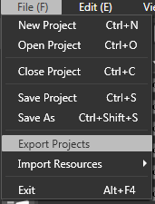
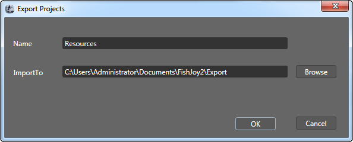

Use in project
Export
- From the File(F) menu, select the Export Projects option.
- Set the export directory and other options.
- Select Yes to begin the export.



Copy file
Copies all files under the export directory to the project's Resource directory.
Use
Copies export files to the Resource directory.
CCScene * newscene = CCScene::create();
CCNode*pNode=CCJsonReader::sharedJsonReader()->createNodeWithJsonFile("SceneEditorTest/SceneEditorTest.json");
Copyright © 2013 CocoStudio.org. All Rights Reserved. 版本v1.0.0